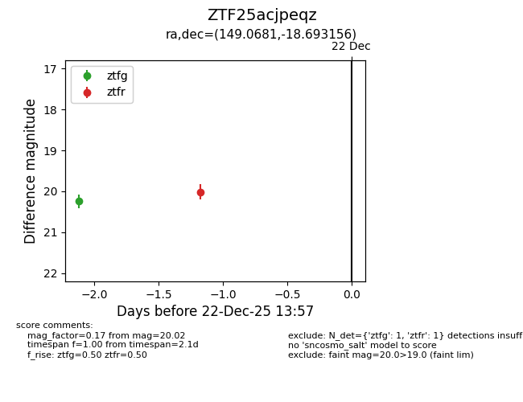
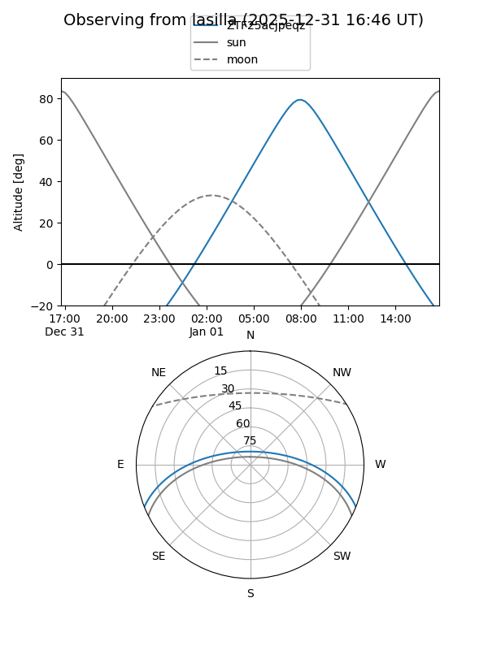
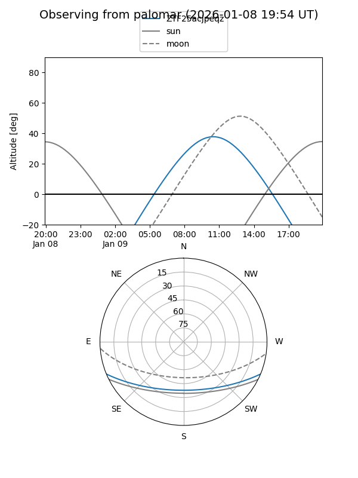
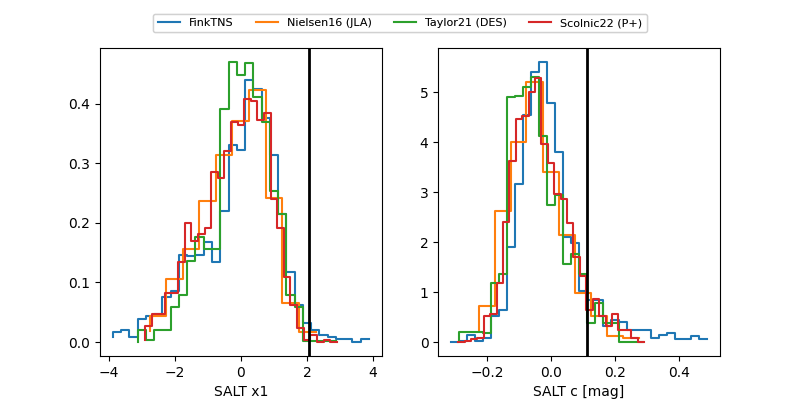

ZTF25acjpeqz
Target ZTF25acjpeqz at 2025-12-22 14:03
Aliases and brokers:
FINK: fink-portal.org/ZTF25acjpeqz
Lasair: lasair-ztf.lsst.ac.uk/objects/ZTF25acjpeqz
ALeRCE: alerce.online/object/ZTF25acjpeqz
alt names
ZTF25acjpeqz (ztf,fink_ztf)
Coordinates:
equatorial (ra, dec) = 149.0681,-18.69316
equatorial (HMS+DMS) = 09:56:16.34,-18:41:35.36
galactic (l, b) = (255.2582,+27.54321)
Flags:
Photometry:
last ztfg=20.24, ztfr=20.02
1 ztfg, 1 ztfr detections
Lightcurve

Visibility


Additional plots
